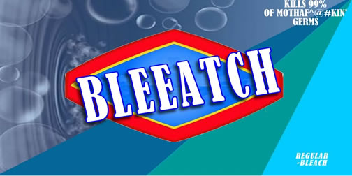
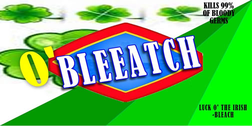
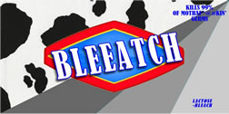
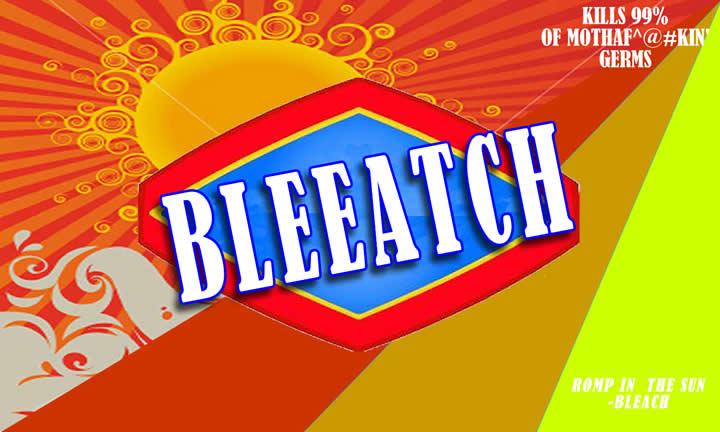

I started my project by designing the beach bottle labels in Fireworks (see close up of the labels below).I then took the main symbol and created animations within Flash to put threw out the video. It starts with an old Tide commerical I found, I turned the video black and white, then added an old film effect to it to make it look like it was from the '50s. At the end of it I added a flash distortion and increased the old film effect to make it appear as if it was being destroyed. The begining audio was created in Garage band and in Live. For the rest of the movie I chopped up samples of Jay-Z's 99 Problems and NIN's Closer and looped them in Live. I filmed friends, took stills, added transitions and effects. I used hostess for the introduction and a narrator for the follow up. I also took sampled material from the internet and Manswers. I intended the video to be a In Living Color/Mad TV kind of commercial.
hostess: Tish Lindsay
narrarator: David Galvan
killer: Me
irish bleach drinker: Kathy Cunningham
cereal bleach eater: Gabby Farquer
the 'nooner girl: Cynthia Barrera



